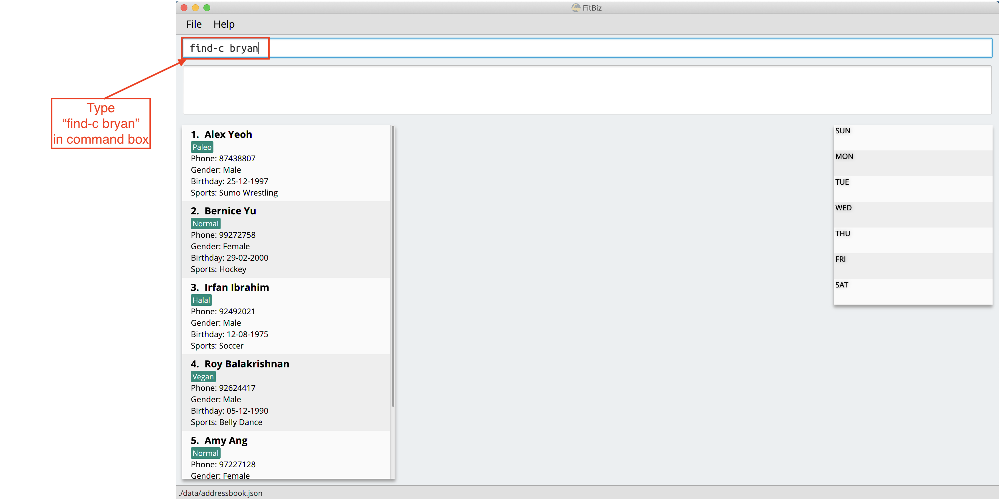
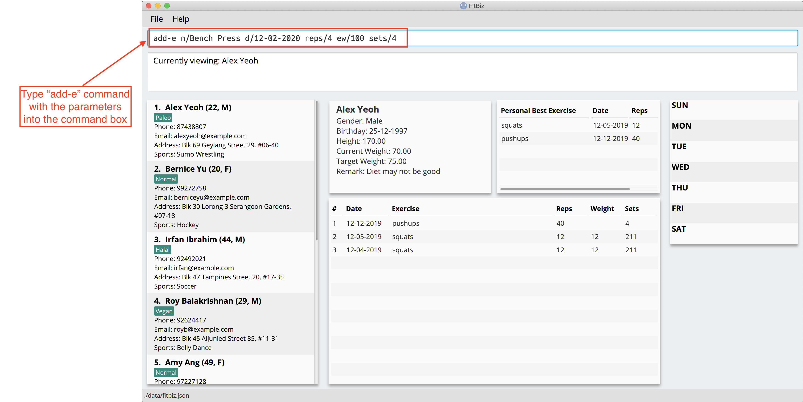

Overview
FitBiz is a desktop fitness business management application. It keeps track of the user’s schedule. He can record client’s information and the exercises they did with the personal bests automatically generated. Graphical visualisations of his client’s progress can also be displayed. The user interacts with it using a Command Line Interface(CLI), and it has a Graphical User Interface(GUI) created with JavaFX. It is written in Java version 11.
Summary of contributions
-
Major enhancement: added Exercise classes and its commands
-
What it does: allows the user to record their client’s exercises. The recorded exercises will then be shown in a table for the user to see. The commands includes:
-
add-eCommand
Users will be able to add exercises to the exercise table. -
edit-eCommand
Users will be able to edit existing exercises. -
delete-eCommand
Users will be able to delete existing exercises.
-
-
Justification: This feature improves the product significantly because recording the exercises of clients is one of the main features of the application. Many other features like showing the client’s personal bests and drawing their clients' progression graph rely on having the exercises recorded.
-
Highlights: Many of the future features will require the exercise classes. Therefore, it is essential to have thorough considerations on how the classes are implemented. I also wrote a substantial amount of code to test the classes while practising good test case designs like boundary value analysis. This will help reduce further bugs when expanding the application.
-
-
Major enhancement: hooked many features from Logic to GUI
-
What it does: features are shown in GUI instead of being shown in text format.
-
Justification: In order for the application to be appealing and user-friendly, the features have to be properly displayed in the GUI. The features include:
-
The exercise progession graph
This is one of the features that is proposed to really attract users. It is a step further from the user just recording his clients' exercises and having the user see the progression of his clients over a period of time. -
The client’s information displayed after
view-ccommand
We have a separate component to show the client’s detailed information. This helps to reduce the clients' information displayed in theClientCardinClientListPanel. The user can see the essential details of each client at a glance and only see the detailed information after aview-ccommand. -
The exercise table done by the client
The user will be able to see the exercises done by their clients' listed in a table instead of being shown text in theResultDisplay. This provides a better user experience.
-
-
Highlights: This enhancement requires a good understanding of Javafx. I have developed a good grasp at using it to provide GUI for Java application.
-
The exercise progession graph
I usedLineChartfrom Javafx to display the graph. The X axis to be shown is date but JavaFx only providesNumberAxisandCategoryAxis. To display the axis as date, I used theNumberAxisbut also had to usesetTickLabelFormatter()to change the label fromepochDayto date. -
The client’s information displayed after
view-ccommand
There is a lot of information shown afterview-cbut only a limited space in the GUI. To solve this, I implementedScrollPaneso that the user can scroll to view the information. -
The exercise table done by the client
We decided it is best for the exercises to be viewed in a table form. To do so, I usedTableViewfrom Javafx.
-
-
-
Minor enhancement: refactored the
Storagecomponent from AB3 to Fitbiz -
Minor enhancement: added
GenderandRemarksattributes toClient -
Code contributed: RepoSense
-
Other contributions:
-
Enhancements to existing features:
-
Documentation:
-
Added command summary in User Guide : 86, 236
-
Wrote the implementation of exercise classes and commands in Developer Guide: 262
-
Wrote the command guide for
list-c,add-eandedit-ein User Guide: 227 -
Changed
UIandStoragediagrams of Developer Guide: 246, 264 -
Added manual testing for adding an exercise: 277
-
-
Community:
-
Contributions to the User Guide
Given below are sections I contributed to the User Guide. They showcase my ability to write documentation targeting end-users. |
Find clients by name: find-c --- Yong Jie
find-c allows you to find clients with the names that are specified in your input. You might have many clients and finding a particular client by scrolling through the entire Client List might be troublesome and difficult. find-c is the command for you.
Format: find-c NAME
Parameters
This section acts as a summary of the important things to note when using find-c including their parameters.
| Parameters | Important points to note |
|---|---|
|
* Substitute * You can use multiple keywords for * The * The keywords used for * Clients matching at least one |
Example
Let’s say that you want to find a client named "Bryan Low" in Client List. You can simply use the find-c command as shown.
-
Type
find-c bryaninto Command Box, and pressEnterto execute it. -
Result Box will display the message of the number of clients listed. In this case, there are 2 clients with "bryan" in their name.

-
You can now see the clients with "bryan" in their names. As you can see, the name you use to search does not need to be case-senstive. The client that we are looking for "Bryan Low" is in Client List.

Common errors / problems
You might face some errors or difficulties when you find-c. In this section, you will be able to understand these errors and resolve them. You will also get a better understanding of the reply from the result box when using find-c.
Using incomplete names
You might wonder why find-c do not show the clients even though the client is clearly in your client list records. It might be possible that you have entered an incomplete name and does not match any word in the name of that client. The example below might help you understand better.
Example: You want to find the client named "Bryan Low" in Client List. Below shows that "Bryan Low" indeed exists and is recorded.

Type find-c bry into Command Box, and press Enter to execute it.

You will obtain "0 clients listed!" in Result Box.

This is because the name that you have entered is incomplete and does not match any word in the name of any of the clients. To correct this, you have to enter find-c bryan as seen in the example.
Using multiple keywords for NAME
You might wonder why the application shows more clients than you intended. It might be possible that you have misunderstood how the NAME parameter gets the client you are finding. The application will show clients as long as one of the words of the client match a keyword you use for name. The example below might help you understand better.
Example: You want to find the client named "Bryan Low" in Client List.
Type find-c bryan low in to Command Box, and press Enter to execute it.
You will obtain clients which have bryan in their name or low in the name. In the case below, there are 3 clients. Bryan Low, Bryan Tan and Alice Low.

You can try to enter keywords for NAME that are more specific to the client you are looking for. This will help to keep your search more scoped.
Add a client’s exercise: add-e --- YongJie
add-e allows you to record an exercise done by the client that you are currently viewing. You will be able to see the exercises recorded and their information in the Exercise Table.
Format: add-e n/EXERCISE_NAME d/DATE [ew/EXERCISE_WEIGHT] [reps/REPS] [sets/SETS]
Parameters
This section acts as a summary of the important things to note when using add-e including their parameters. The square bracket shows that it is optional and your command will still execute even if you do not enter them.
| Parameters | Important points to note |
|---|---|
|
* Substitute * * |
|
* Substitute * * * The range of |
|
* Substitute * * Range for |
|
* Substitute * * Range for |
|
* Substitute * * Range for |
Example
Let’s say that you want to add an exercise with the following details:
Name: Bench Press |
You can use the add-e command to add the exercise as shown.
-
View the client that you want to add the exercise to. For information on how to view the client, you can refer to the
view-csection. For this example, we will add the exercise to the first client in the list,Alex Yeoh. After you enteredview-c 1, you will seeAlex Yeohdetailed information and a table of his recorded exercises.
-
Now type the information of the exercise, matching each detail of the exercise to the parameter. In this case, you will have to type
add-e n/Bench press d/12-02-2020 reps/4 ew/100 sets/4into Command Box. Press enter to execute it. To recap,The name of the exercise after
n/
The date of the exercise afterd/
The reps of the exercise afterreps/
The weight of the exercise afterew/
The sets of the exercise aftersets/ -
After it has been successfully entered, Result Box will display the recorded exercise. You will also be able to see the recorded exercise in the Exercise Table.

Common errors / problems
You might face some errors or difficulties when you use add-e. In this section, you will be able to understand these errors and resolve them.
Duplicate exercises
You might wonder why the application shows you a duplicate exercise error when the details of the exercises you entered are different. It is likely that only the sets differ between the two exercises. The example below might help you understand better.
You might have the following exercise in Exercise Table.

If you were to enter add-e n/Bench Press d/12-02-2020 reps/4 ew/100 sets/2 into Command Box, the only information that is different is the number of sets.

Result Box will show that you have a duplicate exercise.

To solve this, we suggest incrementing the sets of the existing exercise by using the edit-e command. This will help to keep your exercises consolidated and the table compact. For information on using edit-e, you may want to refer to the next section Edit a client’s exercise: edit-e.
=== Edit a client’s exercise: edit-e --- YongJie
edits-e allows edit an existing exercise done by the client that you are currently viewing. You will be able to see the updated exercise in Exercise Table.
Format: edit-e INDEX [n/EXERCISE_NAME] [d/DATE] [ew/EXERCISE_WEIGHT] [reps/REPS] [sets/SETS]
Parameters
This section acts as a summary of the important things to note when using edit-e including their parameters. The square bracket shows that it is optional and your command will still execute even if you do not enter them. However, at least one of them have to be specified.
| Parameters | Important points to note |
|---|---|
|
* Substitute * |
|
* Substitute * * |
|
* Substitute * * * The range of |
|
* Substitute * * Range for |
|
* Substitute * * Range for |
|
* Substitute * * Range for |
Example
Let’s say that you want to edit an exercise done by the client you are currently viewing. The exercise that you want to edit is the one highlighted in the photo below.

The exercise, "Bench Press", currently is 4 reps and weight of 100. However, they might be entered wrongly and you want to change the values. You can use the edit-e command to edit the exercise as shown.
-
Identify the index of the exercise in Exercise Table. From the photo above, the index is 2. Type
edit-e 2 reps/8 ew/50into Command Box. Press enter to execute it. To recap,The reps of the exercise after
reps/
The weight of the exercise afterew/
-
After it has been successfully entered, Result Box will display a success message that the exercise has been edited. You will also be able to see the edited exercise in Exercise Table.

Common errors / problems
You might face some errors or difficulties when you use edit-e. In this section, you will be able to understand these errors and resolve them.
Duplicate exercises
You might wonder why the application shows you a duplicate exercise error when you do not have a duplicate of the edited exercise. It is likely that only the sets differ between the two exercises. The example below might help you understand better.
You might have the following exercise in Exercise Table.

If you were to enter edit-e 2 n/Bench Press d/12-02-2020 reps/4 ew/100 sets/2 into Command Box, the only information that is different is the number of sets.

Result Box will show that you have a duplicate exercise.
To solve this, we suggest you delete the exercise you want to edit and increment the sets of the existing exercise by using the edit-e command. This will help to keep your exercises consolidated and the table compact.
Contributions to the Developer Guide
Given below are sections I contributed to the Developer Guide. They showcase my ability to write technical documentation and the technical depth of my contributions to the project. |
Exercise Feature --- Yong Jie
This feature allows users to record the exercises done by a client. The exercises are displayed in a table form, after the view-c command is called.
Implementation
Implementation of Exercise class
The Exercise class is facilitated by the UniqueExerciseList, which is a wrapper class for an ObservableList of Exercise objects. Each Client contains one UniqueExerciseList attribute to keep track of all Exercises the client has.
Exercise comprises five attributes:
-
ExerciseName -
ExerciseDate -
ExerciseReps -
ExerciseWeight -
ExerciseSets
All instances of Exercise of a client will be contained in the client’s UniqueExerciseList. There is an additional class PersonalBest which is also associated to Exercise. It is omitted and will be discussed in the Personal Best Section due to its high significance. Below shows a UML class diagram which shows Exercise class interactions.
An important point to note about our implementation of Exercise is the method, isSameExercise(). We will consider two Exercise as the same if isSameExercise() returns true.
-
Executes when adding a new
Exerciseto client’sUniqueExerciseList. This includesadd-eandedit-e. -
Checks if the new
Exerciseis the same with an existing instance ofExercisein the client’sUniqueExerciseList. -
Two
Exercisesare the same does not mean that they are equal. TwoExerciseare equal only if all attributes are equal.
Below shows an object diagram of two Exercises that will return true for isSameExercise().
The two Exercise only have different values in ExerciseSets but equal values in:
-
ExerciseName -
ExerciseDate -
ExerciseReps -
ExerciseWeight
This implementation is chosen as we felt that the user should increment the value in ExerciseSets in the existing Exercise. We followed the same idea as in the real life context and want to combine the sets of exercises with the same name, date, reps and weight.
We do consider that the user might want to record the two instances separately as it might be done at different periods of the day. In the future, when adding a same Exercise, we can implement it such that the sets value of the exising Exercise gets incremented automatically instead of showing an error. For now, this implementation keeps the exercise table neat and compact for the user.
Execution flow of exercise commands
The exercise commands edits the client’s UniqueExerciseList. Currently, there are 3 exercise commands.
-
add-e: Adds an exercise to a client -
edit-e: Edits a client’s exercise -
delete-e: Deletes a client’s exercise
The commands follow a similar execution flow as other commands.
-
The
FitBizParserwill create the associated exercise command parser. e.g.AddExerciseCommandParser -
Using
ParserUtil, the parser will extract attribute details from the input and create theCommand. e.g.AddExerciseCommand -
The exercise
Commandwill be executed and modify the client’sUniqueExerciseList.-
Exceptions like no client being viewed and invalid input are thrown here.
-
-
The change will be reflected in the exercise table in GUI.
-
Result box will display success message for the
Command.
Adding an exercise to UniqueExerciseList
When adding a new Exercise to UniqueExerciseList, it is important which index it is added. This is such that the exercises for the client will be displayed in descending chronological order in the table after a view-c command. TableView provides sorting for dates. However, having TableView to do the sorting would result in mismatch of indexes of the exercises in the UniqueExerciseList and in the TableView. This will result in problems when using exercise commands that specifies an index like delete-e.
To address this problem, a custom insertion sort has been written in UniqueExerciseList, under the addToSorted(Exercise) method. This method will do a single pass of the internal list to insert the element at the correct position. This assumes that the internal list is initially sorted (which it should be, since reading from storage will do an initial sort on it).
We will use an example of a add-e command to illustrate the execution of addToSorted(Exercise). Consider an instance where user inputs add-e n/pushup d/12-12-2011 reps/20. The sequence diagram below shows the execution flow when the AddExerciseCommand is executed. Details of exception thrown are omitted as this is a postive instance and for simplicity.
AddExerciseCommand checks if there is an client being viewed. For this instance, we will consider the positive case where indeed there is a client being viewed. AddExerciseCommand will retrieve the client being viewed from the Model so that details like the existing exercise list of the client can be obtained. The sequence diagram illustrates the execution flow of addToSorted(Exercise) to obtain details of the Exercise being added and the existing Exercise in UniqueExerciseList. AddCommand will then check if there is an exercise that we consider as the same in the UniqueExerciseList.
UniqueExerciseList loops through the exercises in the list. and calls getExerciseDate() and getExerciseName(). The LocalDate and exercise name in String type are then used for comparision. The sequence diagram below illustrates the conditional checks during the comparision.
The conditional checks are such that UniqueExerciseList maintain sorted by descending chronological order, followed by alphabetical order for exercises with the same dates.
Below shows a code snippet of the conditional checks in addToSorted(Exercise).
int dateComparision = toAddDate.compareTo(currDate);
if (dateComparision > 0) {
break;
} else if (dateComparision == 0) {
if (toAddName.compareTo(currName) <= 0) {
break;
} else {
idx++;
}
} else {
idx++;
}
Arrays.sort() can be used to sort the exercises in UniqueExerciseList after every addition. However, the worse case time complexity of Arrays.sort() is O(nlogn). This custom insertion sort will guarantee an O(n) time complexity to insert the new Exercise correctly. This is as efficient as it gets as any insertion will already incur an O(n) time complexity to first check if the internal list contains the same exercise. It is important to keep the time complexity low as clients can have many exercises.
Design Considerations
This section explains the our design considerations and analysis for the storage of exercises.
| Considerations | Store exercises with client and all clients in one JSON file (chosen) | Store all exercises into a separate JSON file | Store exercises with client but one JSON for each client |
|---|---|---|---|
Ease of retrieving / storing |
Easy to link the exercises to the client |
Hard to link the exercises to the client |
Hard to identify which JSON file is for which client |
Separation of data |
Does not keep client and exercise data separate |
Keep client data separate from exercise data |
Does not keep client and exercise data separate Might have too many JSON files, one for each client |
Size limit of JSON files |
High chances of having one large JSON file and potentially exceed the size limit of a JSON file |
Low chances of exceeding the size limit of a JSON file |
Low chances of exceeding the size limit of a JSON file |
Separation of concerns |
Non-separate code for reading/storing exercises and clients data |
Separate code for reading/storing exercises and clients data |
Non-separate ode for reading/storing exercises and clients data |
We decided to use the first approach of storing the exercises with the associated client and have all the clients data in one JSON file. Codewise, each JsonAdaptedClient will have a list of JsonAdaptedExercise.

We want to keep the implementation of reading and storing of data simple. The first approach is the most simple. When reading the data, it removes the need to associate the exercises to the client. A client might potentially have a large amount of exercises, resulting in the reading process to be extremely slow. Therefore, a bad user experience.
Moreover, storing the exercise data from client data does not provide any performance benefits. Due to time constraints, we decided that the application should store all the data everytime it closes. This is regardless if the particular exercise or client data has been changed. Having to keep track of which data is edited and only overwrite those data would greatly increase the complexity of the application. Therefore, keeping exercises data separate from client data would be unnecessary and provide little additional functionality/benefits to the user.
Lastly, we foresee that it is improbable for the data size of both clients and exercises to exceed the maximum size limit of a JSON file. With the target user in mind, it is unlikely that he will have an enormous amount of clients. The application is meant to be used by a single user and not an organisation. Even though each client might have many exercises, the information of each exercise is relatively small. For now, collectively, the client and exercise data is unlikely to exceed the JSON size limit. We might consider to have multiple JSON files if the data size gets too big in future versions.
Indeed, JsonAdaptedClient having a list of JsonAdaptedExercise would violate separation of concerns. JsonAdaptedClient is now in charge of the client’s information and the exercises. However, we felt that the benefits outweighted the costs and proceeded with the first choice.